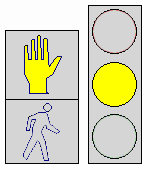
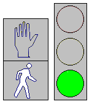

aboutTRAFFIC LIGHT SYSTEM
Pedestrian traffic signal in Taiwan, featuring a "Walking green man" below a countdown display where the "Red Man" once stood.In traffic control, simple and old forms of signal controllers are what are known as electro-mechanical signal controllers. Unlike computerized signal controllers, electro-mechanical signal controllers are mainly composed of movable parts (cams, dials, and shafts) that control signals that are wired to them correctly. Aside from movable parts, electrical relays are also used. In general, electro-mechanical signal controllers use dial timers that have fixed, signalized intersection time plans.
Cycle lengths of signalized intersections are determined by small gears that are located within dial timers. Cycle gears, as they are commonly known, range from 35 seconds to 120 seconds. If a cycle gear in a dial timer results in a failure, it can be replaced with another cycle gear that would be appropriate to use. Since a dial timer has only one signalized intersection time plan, it can control phases at a signalized intersection in only one way. Many old signalized intersections still use electro-mechanical signal controllers, and signals that are controlled by them are effective in one way grids where it is often possible to coordinate the signals to the posted speed limit. They are however disadvantageous when the signal timing of an intersection would benefit from being adapted to the dominant flows changing over the time of the day.
-
traffic control
control information
A traffic signal is typically controlled by a controller inside a cabinet mounted on a concrete pad
-
light1
-
light2